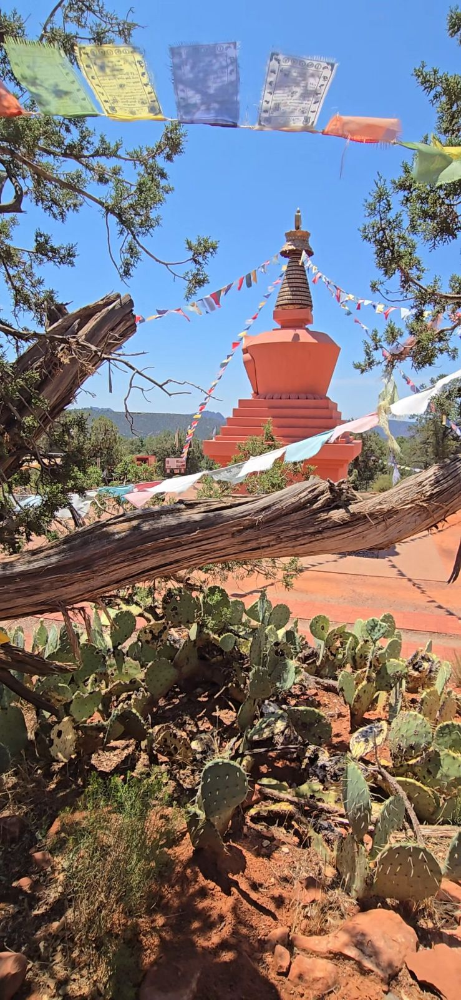

Top rated
Sedona Vortex Odyssey — A Spiritual & Scientific Adventure
★★★★★ 4.9 (677 reviews)
from $130 per person
View TourVortex & Spiritual Tours

Airport Mesa, Bell Rock, Cathedral Rock and Boynton Canyon — Sedona's four famous vortex sites are said to be places where the earth's energy swirls upward, and people have traveled here for decades to meditate, heal and reset. Skeptic or believer, the sites themselves are some of the most beautiful ground in Arizona. The difference between a good vortex tour and a forgettable one is the guide — so we list the ones whose reviews talk about the guide by name.
from $130 per person
View TourCheck price at booking
View TourCheck price at booking
View Tourfrom $150 per person
View TourCheck price at booking
View TourThe Amitabha Stupa and Peace Park — pictured above, and a stop on several of these tours — is free, open daily, and worth the short drive up the hill even if you never book a tour. Spin the prayer wheels, sit for ten minutes, and decide for yourself what Sedona's energy is about. Then, if you want the deeper version with a guide who knows the land's history, book one of the tours above.